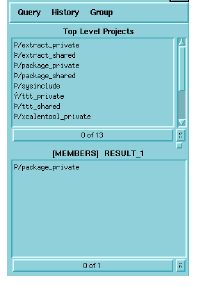

The Minibrowser
As its name implies, the Minibrowser is a scaled-down version of the Browser that is contained within the viewer window. It appears on the right hand side of the Viewer and provides a unified interface for selecting items and generating text or graphical views of those items. You can also make queries about selected items, and create groups containing selected items.

You can hide or display the Minibrowser by toggling the display button in the top right corner of the Viewer window. Hiding the Minibrowser can be helpful when you want to maximize the viewing area for items displayed in the left pane of the Viewer.
The Minibrowser contains three menus:
• Query contains a set of queries similar to the Browser’s Ask pane. It enables you to make queries about selected items in the Viewer without having to return to the Browser.
• History contains the titles of all the lists that you have displayed during the current Viewer session.
• Group enables you to create groups containing selected items, and to start the Group Manager.
More information on using the MiniBrowser to query your information model and interact with your source code is presented in see Working With the Minibrowser.